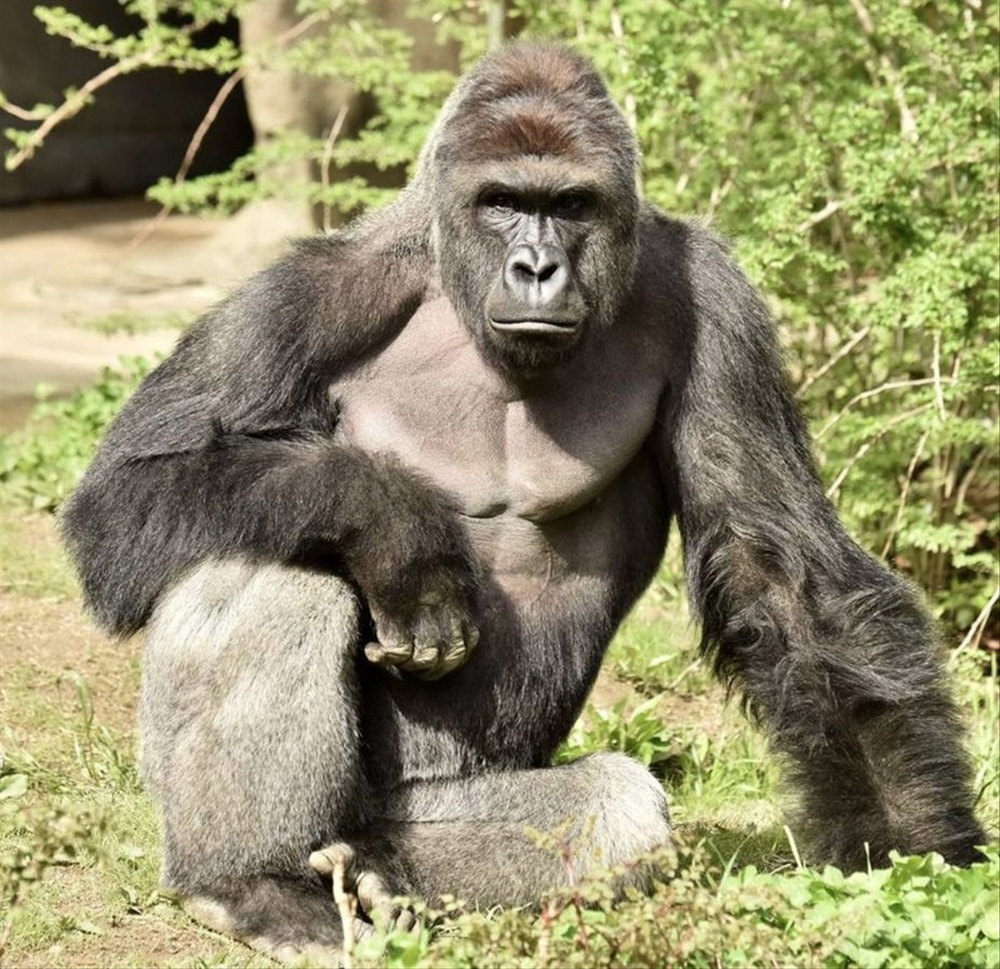
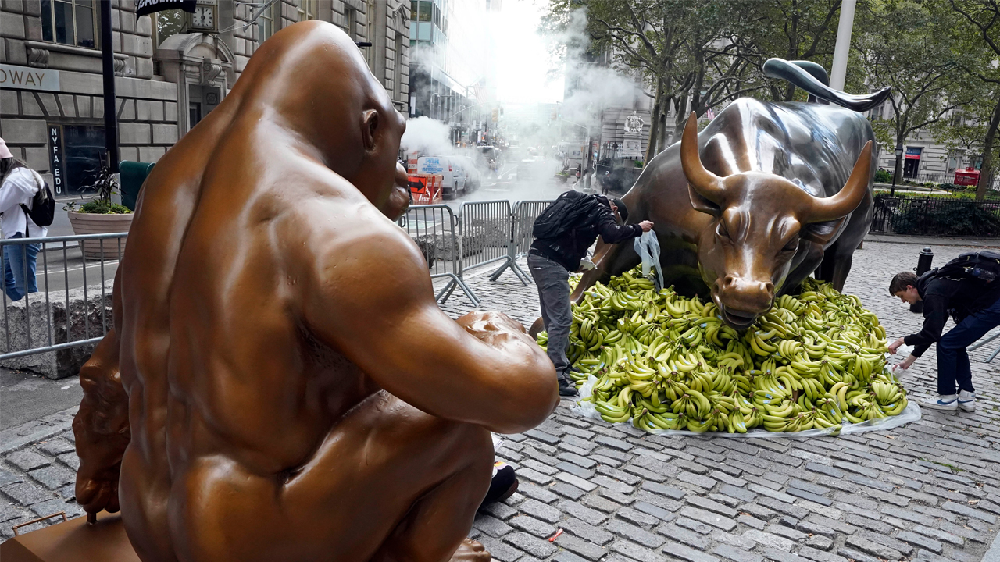

(Brownsville, Texas; 27 de mayo de 1999-Cincinnati, Ohio; 28 de mayo de 2016)
Información biologica
Especie
Gorilla gorilla gorilla
Sexo
Macho
Peso
200 kilos
Nacimiento
27 de mayo de 1999 Brownsville, Texas, Estados Unidos
Fallecimiento
28 de mayo de 2016 (17 años) Cincinnati, Ohio, Estados Unidos
Harambe

Primeros años
Harambe nació el 27 de mayo de 1999 en el zoológico Gladys Porter Zoo en
Brownsville, Texas. Se le bautizó con el nombre elegido por Dan Van Coppenolle, un educador de la zona
que
ganó un concurso patrocinado por el Fzoo. Ese nombre se le ocurrió después de escuchar la canción
«Harambe (Working Together for Freedom)» de Rita Marley, viuda de Bob Marley. Harambee es un
término
en suajili para referirse al trabajo en conjunto por un fin común.
El 18 de septiembre de 2014, se anunció que Harambe sería trasladado al jardín botánico y zoo de
Cincinnati,
para que se adaptara a un nuevo grupo social donde pudiera aprender el comportamiento de un gorila
adulto.3
Harambe tenía 16 años al momento del traslado y se lo agrupó con dos gorilas hembras, Chewie y Mara, de
19
años.
Incidente
El 28 de mayo de 2016, un niño de tres años que visitaba el zoo de Cincinnati se cayó al foso del
hábitat de Gorilla World, donde habitaba Harambe.56 Los testigos afirmaron haberlo escuchado decir que
quería entrar al recinto de los gorilas. El niño entonces trepó una cerca de un metro, se arrastró a
través de un metro de arbustos, y después cayó 4 metros y medio a una fosa con agua poco profunda.8 Los
trabajadores del zoo inmediatamente hicieron señas a los tres gorilas del hábitat para que regresaran al
interior, y las dos hembras lo hicieron.9 Sin embargo, Harambe, el tercer gorila de 200 kilos,
descendió al foso para investigar al pequeño que chapoteaba en el agua.
Durante los siguientes diez minutos, Harambe se puso cada vez más «agitado y desorientado» por
los gritos de las personas que observaban el hecho.1011 Arrastró al niño a través del agua y
ocasionalmente lo sostuvo al sentarse o lo empujó al pararse.10 Harambe exhibió un comportamiento de
«pavoneo», caminando con los brazos y piernas extendidos con rigidez para aparentar ser más
grande, una forma de engaño pero con un peligro inherente si arrastraba o tiraba del niño con
brusquedad.11 Posteriormente cargó al niño por una escalera y salieron del foso hacia tierra firme.
Temiendo por la vida del niño, los encargados del zoo tomaron la decisión de matar al gorila con un
disparo de rifle. Los bomberos de Cincinnati sostuvieron que el niño se encontraba entre las piernas de
Harambe cuando se hizo el disparo.6 Harambe murió un día después de su decimoséptimo cumpleaños.
Reacciones
El incidente fue grabado en video por un testigo anónimo y subido a YouTube, donde se volvió viral y
provocó publicidad y controversia global.1213 Algunos espectadores afirmaron que no estaba claro
si Harambe tenía intenciones de lastimar al niño.1415 Otros exigieron que los padres del niño o el
zoo se hicieran responsables por la muerte del gorila.16 El director del zoológico, Thane Maynard,
sostuvo: «El niño estaba siendo arrastrado y su cabeza pegaba contra el concreto. No era un trato
delicado. El niño estaba en riesgo. Somos muy afortunados de que se encuentre a salvo».17
La policía investigó posibles cargos criminales contra los padres mientras que estos defendieron las
acciones tomadas por el zoo.18 La madre del niño también fue blanco de acoso en Internet y las
redes sociales.19 El 6 de junio de 2016, el fiscal de Ohio Joe Deters declaró que la madre no
afrontaría ningún cargo criminal.5 El zoo fue investigado por la Asociación de Zoológicos y
Acuarios (AZA), que determina los estándares para parques zoológicos, y por el Departamento de
Agricultura de los Estados Unidos.20 En los días posteriores al incidente, activistas por los
derechos de los animales de Cincinnati organizaron una vigilia en el zoo como tributo a Harambe.21
Anthony Seta, uno de ellos, habló en el evento y llamó al hecho «una tragedia sin sentido» y
que la gente podía culpar a los padres o al zoo pero «el hecho es que un gorila que acababa de
celebrar su cumpleaños está muerto».21 El incidente recibió críticas de celebridades
notorias entre las que se incluyeron Ricky Gervais, Brian May y Piers Morgan.
El hecho también ocasionó un debate entre biólogos y primatólogos acerca de si los gorilas y otros
primates deberían estar en cautiverio.11 La primatóloga Jane Goodall sostuvo que, de acuerdo al
video, parecía que Harambe intentaba proteger al niño.23 Goodall dio después una explicación más
larga en una entrevista con el presidente del Fondo Internacional para el Bienestar Animal (IFAW,
por sus siglas en inglés) y concluyó que el zoo no había tenido otra opción que matar a Harambe.24
Escribió: «Fue horrible para el chico, los padres, Harambe, el zoo, los cuidadores y el público.
Pero cuando las personas entran en contacto con animales salvajes, a veces han de tomarse
decisiones de vida o muerte». Goodall conjeturó que mientras los humanos y los animales
salvajes estén en proximidad, no hay forma de prevenir que sucedan accidentes, pero opinó que tener
zoológicos «con los mejores estándares de cuidado» jugaría un papel importante.20 El
cuidador de zoológico Jack Hanna defendió enérgicamente las acciones del parque como la «decisión
correcta» y consideró que un dardo tranquilizador habría tomado entre cinco a diez minutos
en hacer efecto y podría haber exasperado aún más a Harambe.25 El primatólogo Frans de Waal dijo
que el zoo tenía pocas opciones: «Un gorila es tan poderoso que incluso con las mejores
intenciones (y no sabemos si Harambe las tenía) la muerte del niño era un resultado
posible».
En septiembre de 2017, el zoo añadió a Mshindi, un gorila
occidental de llanura macho de 29 años transferido del zoo de Louisville, Kentucky. Se unió a las
anteriores compañeras hembra de Harambe, Chewie y Mara, en ese entonces de 21 y 22 años
respectivamente. Al mismo tiempo, el parque creó un nuevo hábitat interior donde el público podría
ver a los gorilas todo el año de manera segura, detrás de un vidrio de seguridad.
Harambe en la cultura popular
Después de su muerte, Harambe se volvió el tema de múltiples memes de Internet que se volvieron
virales.29 El sitio web Vox escribió en noviembre que Harambe tenía el «innegable estatus de meme
del año de 2016».30 Como escribió la revista People: «Harambe continúa viviendo en la mente
colectiva de la Internet y alcanzando un enrarecido estatus de meme venerado».31 Uno de los
memes más extendidos captó la atención de The Washington Post y la revista New York, que observaron la
proliferación de tributos falsos y exagerados a Harambe: «La idea es que, cuanto más intensa y más
sincera suene la expresión de luto, más graciosa es la broma».2932 Otro meme relacionado se
burlaba de teorías conspirativas, con frases como «Bush did Harambe», en referencia a las
conspiraciones del 11-S y la supuesta connivencia del gobierno de George W. Bush en dicho atentado.33
En Australia, se hicieron bromas con apoyar al cadáver de Harambe como candidato para las elecciones
federales de 2016.34 La empresa de encuestas Public Policy Polling incluyó a Harambe en su encuesta
para las elecciones presidenciales de Estados Unidos de 2016.35 Harambe recibió un 5 % de apoyo a fines
de julio de 2016 (por delante de la candidata del Partido Verde, Jill Stein) y 2 % en agosto de 2016
(empatado con Stein)
El director del zoo de Cincinnati, Thane Maynard, tuvo una reacción de desaprobación ante los memes:
«No estamos entretenidos por los memes, peticiones y carteles de Harambe. Nuestra familia del zoo aún
está sanando y la constante mención de Harambe nos hace más difícil el poder seguir adelante.
Honramos a Harambe al redoblar nuestros esfuerzos de conservación de gorilas y animando a los demás
a que se unan a nosotros».38 A fines de agosto, el zoo borró su cuenta de Twitter después de
que fuera un blanco diario de troles de Internet mencionando a Harambe.39 No obstante, después de dos
meses, el zoo reanudó el uso de su cuenta
Un autodenominado colectivo cultural, Otaku Gang, publicó una parodia de videojuego de lucha para PC
titulado Harambe vs. Capcom, con la posibilidad de usar a Harambe para pelear contra personajes de la
franquicia Street Fighter de Capcom.42 Los raperos estadounidenses Young Thug y Dumbfoundead publicaron
cada uno canciones tituladas «Harambe». El primero lo hizo en su álbum Jeffery, donde cada tema
lleva el nombre de uno de sus «ídolos», aunque las letras no hacen referencia al gorila;4344 el
segundo comparó el destino del primate con la violencia de pandillas y la brutalidad policial.45 El
productor canadiense de dubstep Excision incluyó una canción con el título «Harambe» en su álbum
de 2016 Virus.46 El 30 de marzo de 2019, el director ejecutivo de Tesla, Inc., Elon Musk, publicó una
canción de rap de dos minutos titulada «RIP Harambe» en su cuenta de SoundCloud.47 El tema fue
interpretado por Yung Jake, escrito por este mismo y Caroline Polachek, y producido por BloodPop.48 La
revista Rolling Stone llamó a la canción «un animado tributo a Harambe».47 En mayo de 2020, la
banda de metal pirata Rumahoy publicó una canción titulada «Harambe, the Pirate Gorilla» como
primer sencillo de su álbum Time II: Party.49 En el anuncio de la publicación, la banda declaró que el
tema «es un clásico homenaje de metal pirata dedicado a su homónimo, cuya muerte causó gran
controversia en todo el mundo»

El 18 de octubre de 2021, una estatua de dos metros de Harambe fue instalada en el parque Bowling Green
de Nueva York, directamente enfrente de la estatua del Toro de Wall Street (Charging Bull). Además, la
estatua del toro se encontraba rodeada de 10 000 bananas, lo que se hacía a modo de crítica del sistema
capitalista y la disparidad de la riqueza. El acto había sido organizado por los fundadores de
Sapien.Network, una plataforma de red social «dedicada a poner las necesidades y el bienestar de los
seres humanos primero».